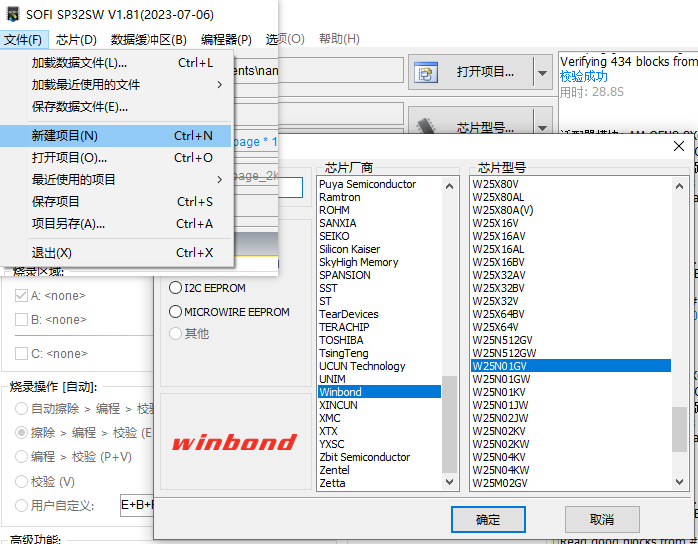

3.12.4. 烧录器烧录¶
这里烧录器所采用的型号为硕飞 SP328， 下文将对 D211 平台的镜像烧录做一个使用说明， 更多使用方法可参考官方使用文档以及软件使用文档。
软件使用文档可直接启动SOFI SP32软件后点击软件菜单 [帮助] - [查看帮助] 进行阅读。
3.12.4.1. 编译配置¶
对于 NAND 烧录镜像制作，需要设置 ROOTFS 为 UBI 文件格式，设置方法是通过 make menuconfig 打开配置界面配置项 BR2_TARGET_ROOTFS_UBI 。
Filesystem images --->
RootFS images --->
[*] ubi image containing an ubifs root filesystem
[ ] Use custom config file
() Additional ubinize options
注意
该配置仅对于使用 NAND 且用到 UBI 文件系统时需要开启，其它情况无需关注。
3.12.4.2. 操作步骤¶
3.12.4.2.1. 准备镜像¶
编译完成后在编译输出目录(images)下找到烧录器烧录所使用到的镜像，例如 d211_demo100_nand_page_2k_block_128k_v1.0.0.bin
3.12.4.2.2. 新建项目¶
烧录器具有自动识别芯片的功能，点击软件菜单 [芯片] - [识别芯片型号]，选择芯片类型然后点击开始检测，若识别失败，则手动选择芯片型号。
点击软件菜单 [文件] - [新建项目] , 软件将弹出芯片型号选择对话框, 请根据芯片型号选择匹配的型号;

图 3.10 新建项目¶

3.12.4.3. 分区烧录模式¶
分区烧录模式，仅 NAND Flash 烧录设置有所不用, 其它操作步骤不变。
3.12.4.4. 参考文档¶
使用手册：https://www.sflytech.com/download/software/SP32_Manual_cn.pdf